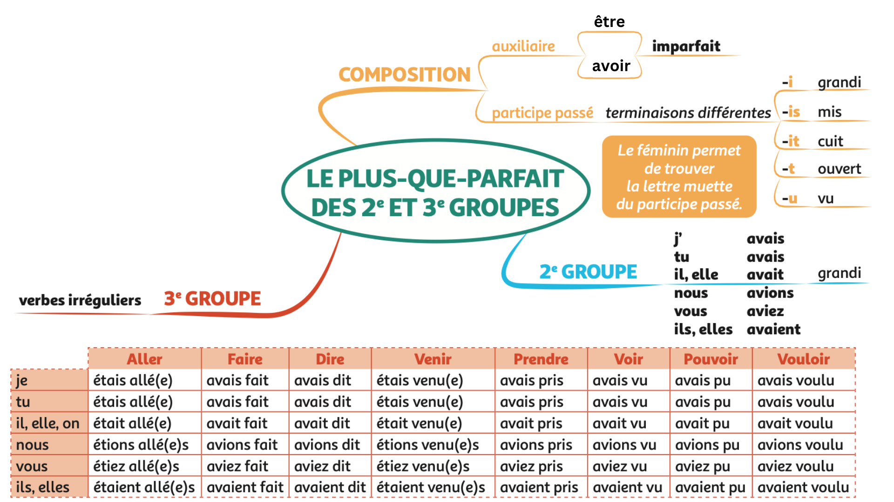
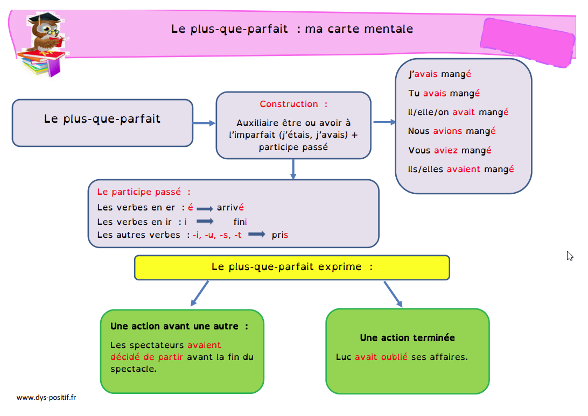

Le plus-que-parfait de l'indicatif
À retenir
Le plus-que-parfait est un temps composé du passé. Il exprime une action terminée qui a eu lieu avant une autre action passée. Il est formé de l'auxiliaire être ou avoir à l'imparfait suivi du participe passé du verbe.
1. La conjugaison du plus-que-parfait
Les auxiliaires à l'imparfait (à connaître par cœur)
AVOIR
ÊTRE
2. Les valeurs du plus-que-parfait
Action antérieure à une autre action passée
Le plus-que-parfait exprime une action qui a eu lieu avant une autre action passée (cette autre action est souvent à l'imparfait, au passé simple ou au passé composé).
Quand j'avais fini mes devoirs, je suis sorti jouer.
Il avait déjà mangé lorsque je suis arrivé.
Elle était partie avant que son frère ne se réveille.
Action terminée dans le passé
Le plus-que-parfait indique qu'une action est achevée avant un moment donné du passé.
Il avait oublié ses clés.
Nous avions déjà vu ce film.
Les spectateurs avaient décidé de partir avant la fin du spectacle.
Après un "si" conditionnel
Dans une phrase hypothétique, le plus-que-parfait peut être utilisé après "si" pour exprimer une condition non réalisée dans le passé (suivi du conditionnel passé).
Si tu étais venu plus tôt, tu l'aurais vu.
Si j'avais su, je ne serais pas venu.
Si nous avions étudié, nous aurions réussi.
À retenir
Plus-que-parfait = action déjà terminée dans le passé (c'est le "passé dans le passé").
Exemple : Hier, quand je suis arrivé (passé récent), il avait déjà mangé (passé plus lointain).
Pièges à éviter
Confusion avec la voix passive
Attention ! "Il était fatigué" peut être :
✅ Plus-que-parfait passif (si on peut ajouter "par quelqu'un/quelque chose")
Ex: Il était fatigué par ce long voyage.
❌ Être + adjectif attribut (si c'est un état)
Ex: Il était fatigué (il avait sommeil).
Astuce : Si tu peux remplacer par un autre adjectif (Il était content), c'est un attribut, pas du passif.
"Être" + adjectif : même structure, sens différent
Même construction (auxiliaire être + participe/adjectif) mais sens différent :
✅ Plus-que-parfait : Il était parti (action terminée)
✅ Attribut du sujet : Il était content (état)
✅ Passif : Il était aimé (par quelqu'un)
Comment distinguer ? Le sens et la possibilité d'ajouter "par..." ou de remplacer par un adjectif.
Accord du participe passé
Avec ÊTRE : Le participe passé s'accorde TOUJOURS avec le sujet.
Ex: Elles étaient parties.
Avec AVOIR : Le participe passé ne s'accorde PAS avec le sujet.
Ex: Elles avaient mangé (pas d'accord).
MAIS : Accord avec le COD si placé avant.
Ex: Les pommes qu'elles avaient mangées (COD "les pommes" avant → accord).
Choix de l'auxiliaire : être ou avoir ?
AVOIR : la plupart des verbes
Ex: j'avais mangé, j'avais fini, j'avais pris
ÊTRE :
- Les 16 verbes de déplacement (aller, venir, partir, arriver, entrer, sortir, monter, descendre, tomber, rester, retourner, passer, etc.)
- Les verbes pronominaux (se lever, se laver, etc.)
- Naître et mourir
Attention aux verbes qui changent de sens !
Ex: Je suis monté (dans l'arbre) / J'avais monté (les valises)
Cartes mentales
Carte 1 - Verbes irréguliers

Carte 2 - Récapitulatif

Carte 3 - Définition

Carte 4 - Construction
